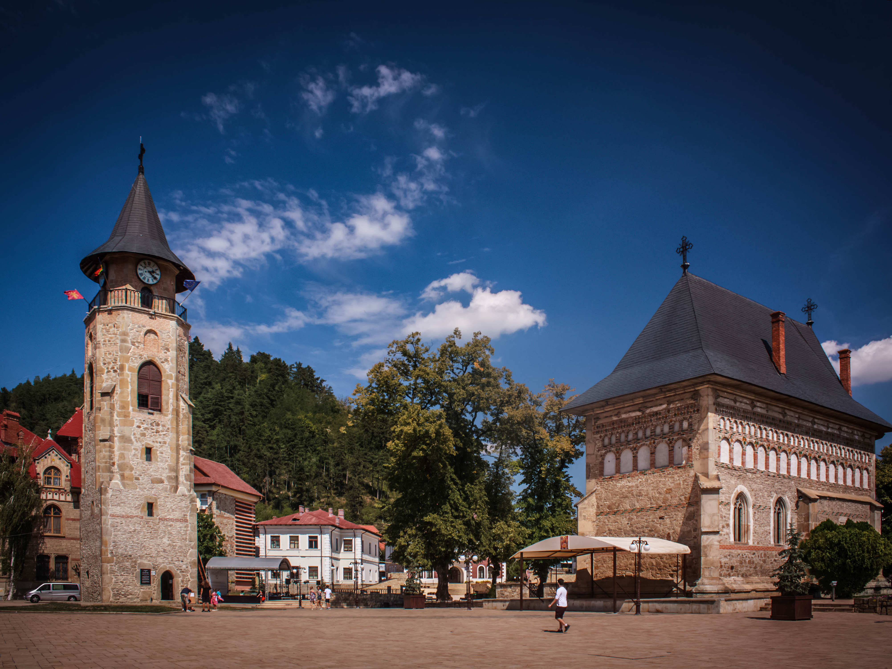

Piatra Neamț lies in the Bistrița River Valley, surrounded by mountains — Pietricica (530 m), Cozla (679 m), Cernegura (852 m), Bâtca Doamnei (462 m) and Cârloman (617 m) — at an average height of 345 m (1,131.89 ft). The river Doamna is a right tributary of the Bistrița; it flows into the Bâtca Doamnei Reservoir near Piatra Neamț.
The city is located 350 kilometres (217 miles) north of Bucharest, in the historical region of Moldavia. The nearest airport is Bacău, situated 60 km (37 miles) south. Piatra Neamț is linked by Romanian railways trunk number 509 to Bacău (and from there by Line 500 to Bucharest), and by DN15 [ro] national road to Bacău (and from there by DN2 to Bucharest), Iași, Suceava, and Târgu Mureș in the Transylvania region.

The area around Piatra Neamț is one of the oldest inhabited areas in Romania. The oldest traces of human civilisation in the present territory date back to the higher Paleolithic, about 100,000 years BCE. The Cucuteni culture, whose development lasted approximately one thousand years (c. 3600-2600 BCE) was attested in the territory of Neamţ county by a remarkable number of settlements (approx. 150), archaeological diggings unearthing important museum collections of Aeneolithic artifacts. Archaeologists have also discovered objects here dating back to the Neolithic Period and the Bronze Age (about 1900-1700 BCE).
Excavations just outside the city revealed the ruins of a large Dacian city, Petrodava, mentioned by Greek geographer Ptolemy in the 2nd century. The whole compound had its heyday between the first century BCE and the first century CE. Standing out is the citadel at Bâtca Doamnei which contains shrines resembling those identified in the Orăștie Mountains. As far as the existence of a local leader is concerned, historians tend to suggest the identification of the Kingdom of Dicomes in the very political centre at Petrodava. The complex of strongholds without peer in Moldavia and Wallachia is evidence as to a powerful political and military centre both in Burebista’s time and in the period that preceded the reign of Decebalus. The settlement was documented in the 15th century as Piatra lui Crăciun, or Camena, a market town.